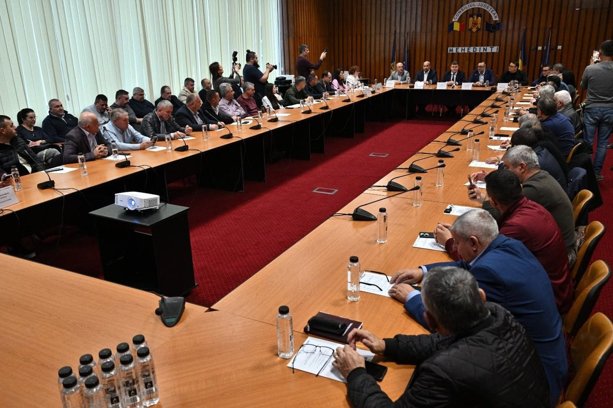
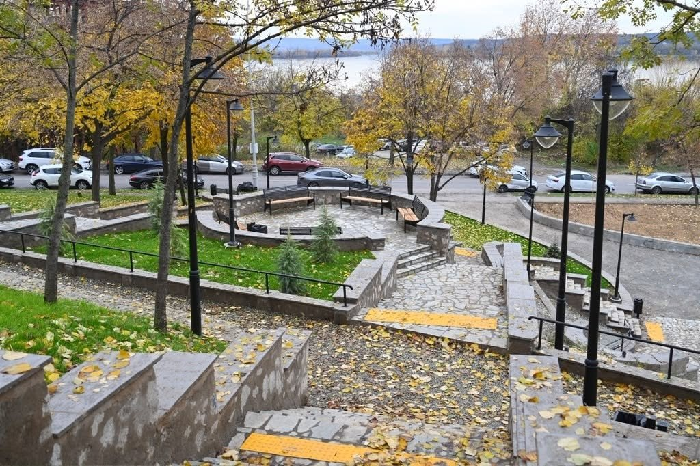
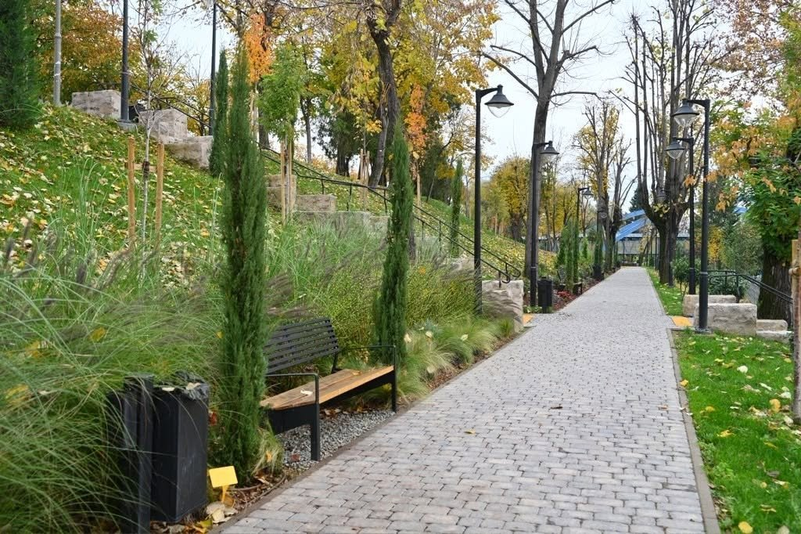

Municipiul Drobeta-Turnu Severin și județul Mehedinți își pregătesc din timp proiectele pentru următorul ciclu de finanțare europeană. Primarul Marius Screciu și președintele Consiliului Județean Mehedinți, Aladin Georgescu, au primit vizita conducerii Agenției pentru Dezvoltare Regională (ADR) Sud-Vest Oltenia, reprezentată de directorul general Stelian Bărăgan și de echipa instituției.
Pe agenda întâlnirii s-au aflat viitoarele oportunități de finanțare europeană și proiectele pe care autoritățile locale le pregătesc pentru perioada 2028–2032.
Proiecte pentru mediu, eficiență energetică și dezvoltare durabilă
Discuțiile au vizat și direcțiile de finanțare promovate de ADR Sud-Vest Oltenia pentru perioada următoare. Accentul cade pe proiectele care urmăresc protejarea mediului, creșterea eficienței energetice și dezvoltarea durabilă a comunităților – domenii care vor cântări mult în programele europene ale următorilor ani.
Pentru o administrație locală, astfel de întâlniri contează: cu cât proiectele sunt pregătite mai devreme și aliniate priorităților de finanțare, cu atât cresc șansele ca ele să primească bani europeni atunci când se deschid apelurile.

Parcurile centrale, prezentate ca exemplu de investiție europeană
În cadrul vizitei, oaspeților le-au fost prezentate și câteva dintre investițiile deja realizate în municipiu, printre care parcurile centrale. Potrivit primarului, acestea sunt „exemple concrete ale modului în care fondurile europene pot contribui la îmbunătățirea spațiilor publice și a calității vieții”.
Aleile pavate, zonele de odihnă cu bănci, iluminatul nou și spațiile verzi refăcute au schimbat aspectul centrului Severinului, iar parcurile au devenit locuri de plimbare și relaxare pentru localnici și pentru turiștii care vizitează orașul de pe malul Dunării.

Mesajul primarului: „Dezvoltarea Severinului trebuie să continue”
La finalul întâlnirii, primarul Marius Screciu a mulțumit reprezentanților ADR Sud-Vest Oltenia pentru vizită și pentru dialogul constructiv:
„Avem proiecte de pregătit și oportunități de valorificat, iar dezvoltarea Severinului și a întregului județ Mehedinți trebuie să continue!”

Ce este ADR Sud-Vest Oltenia
Agenția pentru Dezvoltare Regională Sud-Vest Oltenia acoperă județele Dolj, Gorj, Mehedinți, Olt și Vâlcea și gestionează, în calitate de autoritate de management, Programul Regional Sud-Vest Oltenia, prin care primăriile, consiliile județene și alți beneficiari din regiune pot accesa fonduri europene pentru infrastructură, eficiență energetică, mobilitate urbană sau dezvoltare locală.
Pentru Mehedinți, colaborarea cu ADR s-a concretizat deja în numeroase contracte de finanțare, iar pregătirea din timp a proiectelor pentru 2028–2032 poate face diferența în atragerea de noi fonduri pentru municipiu și pentru întregul județ.
🇪🇺 Pe scurt
Ce: vizită de lucru a conducerii ADR Sud-Vest Oltenia
Unde: Drobeta-Turnu Severin
Participanți: Stelian Bărăgan (director general ADR), primarul Marius Screciu, președintele CJ Mehedinți Aladin Georgescu
Teme: finanțări europene 2028–2032 – mediu, eficiență energetică, dezvoltare durabilă
Exemplu prezentat: parcurile centrale modernizate cu fonduri europene
Urmăriți secțiunea Actualitate de pe MehedintiAzi.ro pentru cele mai noi informații despre investițiile din județ și pagina de Facebook Mehedinți Azi.
Redactia MehedintiAzi.ro